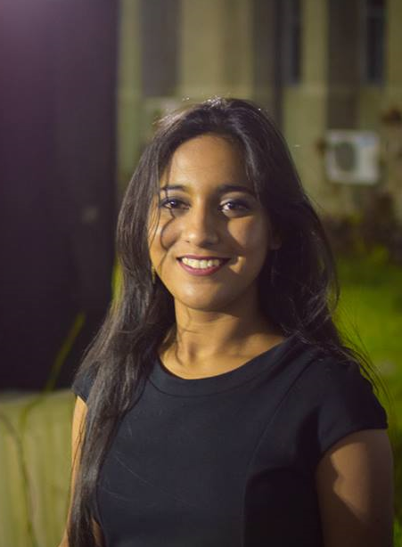
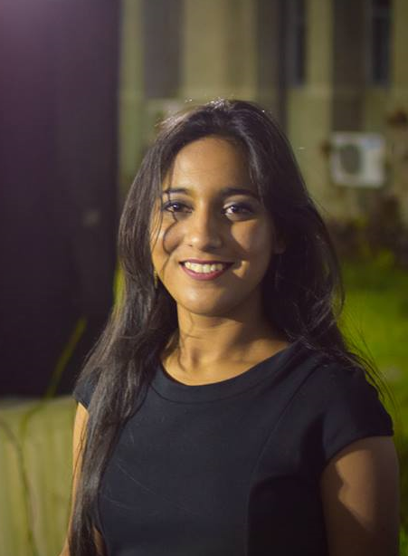
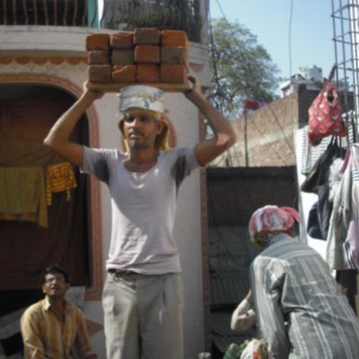

About Me
 Hi I'm Radhika. I am a second year Masters' student in Mechanical Engineering at Stanford University. I completed my graduation in Mechanical Engineering with minor in Computer Science from Indian Institute of Technology Gandhinagar.
 Hi I'm Radhika. I am a second year Masters' student in Mechanical Engineering at Stanford University. I completed my graduation in Mechanical Engineering with minor in Computer Science from Indian Institute of Technology Gandhinagar.
Word2Vec using Character n-grams
Stanford University
The traditional Word2Vec model has lead to significant improvements in the field of NLP, but has a limitation that good vector representations are not learned for: Rare words Words that are not seen in the training corpus This problem is more prominent in case of morphologically rich languages (e.g. German). To overcome these, we incorporated the information about the character n-grams that each word is made of into its vector representation and assess the performance of the vectors using intrinsic and extrinsic evaluation methods.
Motion Planning in Unknown Environments
Stanford University
Autonomous navigation in unseen environments has many applications including disaster, rescue and exploration. In this project, we developed a method to obtain a path to a desired destination in an unseen environment based on local sensor data as input. We are using Q-learning approach to make an optimal decision. Q value is obtained from function approximation using a neural network.
CNC Programming to manufacture gears on 3 axis CNC-VMC
Indian Institute of Technology, Gandhinagar
Gears are produced with gear hobbing machines or fancy CNC machine, but cannot be manufactured by a 3 axis vertical milling machine as there is no way to provide involute paths in a VMC, which are the main feature of any gear tooth. This project involved developing a technique to make this possible. With existing circular interpolation in a VMC, an approximation technique was developed to manufacture involute surfaces on a VMC. In order to maintain desired quality of the gear surface irrespective of approximation, tolerancing was used to develop a protocol for deciding the fineness and accuracy required during approximation.

Designing for Indian Healthcare
Indian Institute of Technology, Gandhinagar
The project analyzed conditions of construction workers in India carrying loads on their heads and its adverse effects on their health with an aim to design, develop and prototype of a solution for their major need.
Autothermal Reforming of Diesel Reaction Simulations
Indian Institute of Technology, Gandhinagar
In order to operate hydrogen fuel cells as an energy source, a steady supply of Hydrogen is required. In limited resource environments like submarines, this Hydrogen could be obtained using autothermal reactions of hydrocarbon fuels. In order to obtain efficiency in this reaction, an optimum steam to oxygen ration is required for every fuel. This project involved autothermal reforming reaction simulations for Diesel to obtain this optimum ratio for Diesel.
Rendering and Animating 3D Graphics scenes
Indian Institute of Technology, Gandhinagar
Used HTML and Three.js to create and animate the interior of a room scene with mirrors, lights and shadows
Molecular Dynamic Simulations of Silicon Nanowire
Indian Institute of Technology, Gandhinagar
Using nano-scale heat transfer techniques and equations, MATLAB was used to simulate silicon nanowire structures. The heat transfer equations and boundary conditions were imposed on this nanowire structure to estimate the conductivity of the system using the Green-Kubo relation.
Solar Paper Pulp Tile Dryer
Indian Institute of Technology, Gandhinagar
Tiles manufactured using paper pulp are dried in furnace dryers requiring fuel. This project aimed to analyze the use of solar dryers for this purpose by analyzing weather data and evaporation rates.
Competency Profiles Mapping (OB&HRM)
Indian Institute of Technology, Gandhinagar
Generated competency profiles for administrative and non-administrative positions in IIT Gandhinagar through interviews to better understand organizational roles.
Compression for Hindi Language Documents
Indian Institute of Technology, Gandhinagar
Analyzed character frequencies from text documents in Hindi and implemented Huffman algorithm for compressing the documents using the analyzed frequencies
Designing: Engineering Graphics
Indian Institute of Technology, Gandhinagar
Project in Engineering Graphics to design a product
Precession in spinning tops
Indian Institute of Technology, Gandhinagar
Analyzing the Lagrangians and understanding the role of precession as a stability mechanism
Adhesion of Microspheres to Graphene Coated Substrates
University of Washington
Graphene is a two dimensional hexagonal lattice of carbon, only a single or few atomic layers thick. Transferring graphene to desired substrates is a challenge as it is fragile and invisible to naked eye. This project involved discovering a method to successfully transfer graphene to aluminum, and mount microspheres on the graphene using Langmuir-Blodgett method for self-assembly, which is a challenge due to graphene’s hydrophobic nature.
CFD Simulations: Fontan Surgery
Indian Institute of Technology, Bombay
A Fontan heart surgery involves bypassing the right ventricle and diverting the blood from the IVC and SVC directly to the pulmonary arteries. This creates turbulence and energy loss in the flow. This summer internship involved creating CFD simulations of this blood flow using various offsets in the connections and analyzing the vortex formations and pressure distributions in the flow patterns.